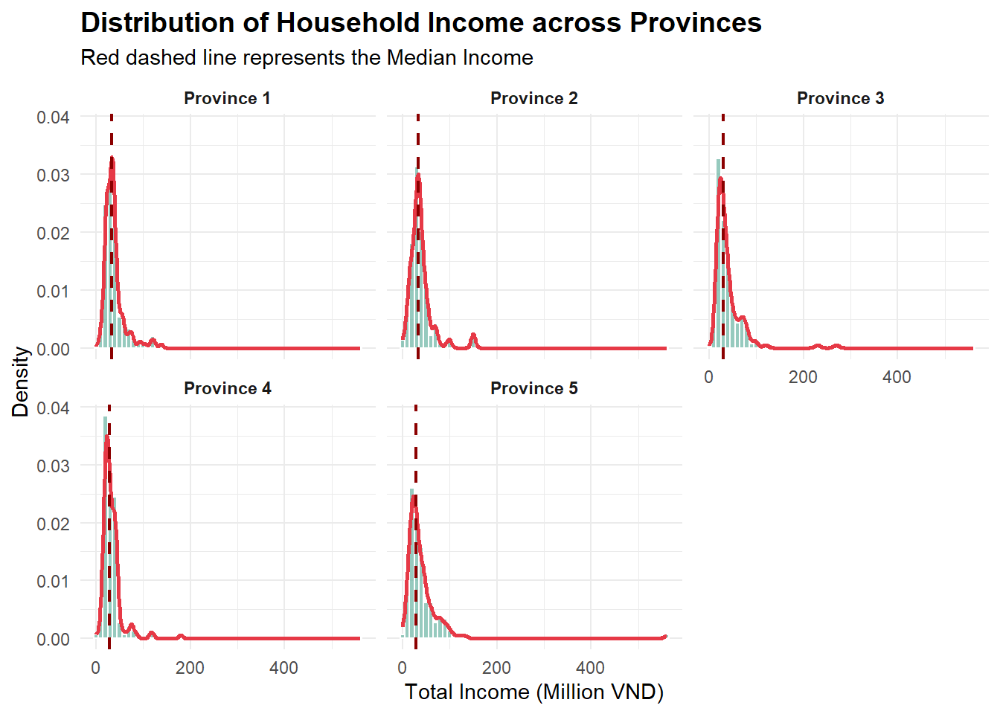

library(pacman)
p_load(tidyverse, # Core data science packages (ggplot2, dplyr, readr, etc.)
ggrepel, # Repulsive text labels
ggthemes, # Extra themes for ggplot2
hrbrthemes, # Typography-centric themes
patchwork, # For combining plots
knitr, # For static tables
kableExtra, # For styling tables
readxl) # For imporitng excel fileTakeHome_Ex01
Visualizing and Analysis on Income & Livelihood of Informal Rural Laborers in Vietnam
1. Overview
1.1 Research Scene
In the economic structure of developing regions, informal laborers play a crucial but often invisible role. Without formal employment contracts or social safety nets, their livelihoods are highly vulnerable to economic fluctuations. This is particularly true in the northern mountainous regions of Vietnam, where limited resources and geographic barriers pose significant challenges.
Visualizing the income sources, asset distribution, and living conditions of these laborers is essential for understanding the economic resilience of rural households and informing targeted policies.
1.2 Research Goal
The primary objective of this exercise is to apply visual analytics techniques to reveal patterns, trends, and relationships within the survey data. Specifically, this analysis aims to:
- Characterize Income Structures: Determine the distribution of total earnings and identify income inequality.
- Demographic Comparison: Explore how gender (
CGEN) and ethnicity (CRAC) influence earning potential. - Geographical Analysis: Visualize the variation in agricultural vs. non-agricultural income across different provinces (
CPRO). - Financial Health Assessment: Examine the relationship between household income, debt (
LCRE), and savings (LSAV). - Well-being Correlation: Investigate whether higher economic status correlates with higher self-reported living satisfaction.
1.3 Data Description
The dataset used in this analysis originates from a survey on the livelihoods of informal laborers in rural Vietnam.
NoteData Source
The dataset is retrieved from the study by Hoang & Nguyen (2021).
Reference: Data from ScienceDirect
The raw data contains numerical codes representing various demographic and economic variables. Key variables focused on in this study include:
- Demographics:
CPRO(Province),CGEN(Gender),CRAC(Race/Ethnicity). - Financials:
TEIN(Total Earned Income),TAIN(Total Agricultural Income),TOIN(Total Non-farm Income). - Assets & Debt:
LCRE(Loan/Credit),LSAV(Savings). - Perception:
LHO(Living Condition Assessment).
2. Data Preparation
In this section, we will load the necessary R packages, import the dataset, and perform data wrangling to transform raw numerical codes into meaningful categorical labels suitable for analysis.
2.1 Loading Packages
First, we load the required packages. We will use pacman for efficient package management. The core package is tidyverse for data manipulation and visualization, supplemented by ggrepel for label formatting, ggthemes for plot aesthetics, and knitr for generating tables.
2.2 Data Importing
The dataset is imported using read_excel. We display the first few rows to inspect the raw structure.
raw_data <- read_excel("data/Data.xlsx")The newly imported dataset consists of 725 rows and 30 columns. The detailed data structure can be viewed in the collapsible section below.
Note
glimpse(raw_data)Rows: 725
Columns: 30
$ CPRO <dbl> 1, 1, 1, 1, 1, 1, 1, 1, 1, 1, 1, 1, 1, 1, 1, 1, 1, 1, 1, 1, 1, 1,…
$ CGEN <chr> "1", "1", "2", "1", "2", "2", "1", "1", "1", "1", "1", "2", "2", …
$ CRAC <dbl> 2, 2, 2, 2, 2, 2, 2, 2, 2, 2, 2, 1, 1, 2, 2, 2, 1, 1, 1, 1, 1, 1,…
$ CJOB <dbl> 1, 1, 3, 1, 1, NA, 3, 1, 3, 1, 1, 1, 2, 1, NA, 2, 1, 1, 1, 1, 1, …
$ CQUI <dbl> 3, 5, 3, 3, 3, 4, 1, 3, 3, 3, 3, 3, 2, 3, 5, 1, 2, 2, 2, 2, 2, 2,…
$ TEIN <dbl> 37, 25, 33, 35, 36, 21, 35, 36, 38, 30, 58, 24, 32, 11, 22, 95, 4…
$ TAIN <dbl> 25, 22, 25, 30, 28, 17, 25, 28, 26, 22, 40, 24, 23, 11, 20, 30, 3…
$ TSII <dbl> 7, 0, 0, 5, 0, 0, 0, 0, 12, 2, 0, 0, 0, 0, 0, 50, 17, 10, 12, 15,…
$ TOIN <dbl> 5, 3, 8, 0, 8, 4, 10, 8, 0, 6, 18, 0, 9, 0, 2, 15, 0, 0, 0, 0, 16…
$ FEDU <dbl> 1, 0, 1, 1, 0, 0, 3, 0, 2, 0, 0, 0, 0, 0, 0, 2, 1, 2, 2, 2, 2, 2,…
$ FVTP <dbl> 1, 1, 1, 1, 1, 1, 2, 1, 2, 1, 1, 1, 1, 1, 1, 2, 1, 2, 2, 2, 2, 2,…
$ FCRA <dbl> 1, 2, 1, 1, 1, 1, 1, 1, 1, 1, 1, 1, 1, 1, 1, 1, 1, 1, 1, 1, 1, 1,…
$ FTAP <dbl> 1, 1, 2, NA, 2, 2, 2, 2, 2, 2, 2, NA, NA, 2, NA, 2, NA, 2, NA, NA…
$ LHO1 <dbl> NA, 1, NA, 1, NA, NA, NA, NA, NA, NA, NA, NA, NA, NA, 1, NA, NA, …
$ LHO2 <dbl> 1, NA, NA, NA, 1, 1, NA, 1, 1, 1, 1, 1, NA, 1, NA, NA, NA, NA, NA…
$ LHO3 <dbl> NA, NA, NA, NA, NA, NA, 1, NA, NA, NA, NA, NA, 1, NA, NA, 1, 1, 1…
$ LHO4 <dbl> NA, NA, 1, NA, NA, NA, NA, NA, NA, NA, NA, NA, NA, NA, NA, NA, NA…
$ LCRE <dbl> NA, 15, NA, NA, NA, NA, NA, NA, NA, NA, NA, NA, NA, NA, NA, NA, N…
$ LSAV <dbl> 5, NA, 30, NA, NA, 2, 70, NA, 25, 10, 15, NA, NA, 16, NA, 20, NA,…
$ LWDA <dbl> 240, 350, 260, 300, 360, 360, 260, 260, 300, 300, 270, NA, NA, 20…
$ PPO1 <dbl> 5, 2, 5, NA, 5, 2, 5, 5, 4, 5, 4, NA, NA, NA, NA, NA, NA, NA, NA,…
$ PPO2 <dbl> 2, 5, 5, NA, 5, 4, 2, 2, 3, 1, 1, NA, NA, NA, NA, NA, NA, NA, NA,…
$ PPO3 <dbl> 3, 3, 1, NA, 1, 3, 3, 3, 3, 3, 3, NA, NA, 1, NA, 1, NA, 1, NA, 1,…
$ PPO4 <dbl> 1, 1, 1, NA, 1, 1, 2, 2, 2, 2, 2, NA, NA, 3, NA, NA, NA, NA, NA, …
$ PPO5 <dbl> 3, 1, 1, NA, 1, 1, 3, 3, 3, 3, 3, NA, NA, 1, NA, NA, NA, NA, NA, …
$ ARO1 <dbl> 3, 1, 1, NA, 1, 1, 2, 2, 2, 2, 2, NA, NA, NA, NA, NA, NA, NA, NA,…
$ ARO2 <dbl> 1, 1, 1, NA, 1, 1, 1, 1, 1, 2, 1, NA, NA, 2, NA, NA, NA, NA, NA, …
$ ARO3 <dbl> 1, 1, 1, NA, 1, 1, 3, 3, 2, 3, 3, NA, NA, 1, NA, 1, NA, NA, NA, 1…
$ ARO4 <chr> "3", "3", NA, NA, "2", "2", "3", "3", "3", "3", "3", NA, NA, "3",…
$ ARO5 <dbl> 1, 1, 1, NA, 1, 1, 3, 3, 3, 3, 3, NA, NA, 1, NA, NA, NA, NA, NA, …2.3 Data Wrangling
The raw dataset contains numerical codes for categorical variables and requires significant preprocessing to be suitable for visualization. To ensure data accuracy and interpretability, we implemented a five-step data wrangling pipeline:
Step 1: Variable Selection and Renaming
The original dataset contains 30 columns. We narrowed our scope to key variables relevant to the analysis objectives: * Demographics: Province, Gender, Ethnicity, Job Type. * Financials: Income components (Total, Agricultural, Service/Industrial, Others), Debt (LCRE), and Savings (LSAV). * Living Standards: House status indicators (LHO1 - LHO4). * Factors: Education Level (FEDU).
All selected columns were renamed from cryptic codes (e.g., CGEN, TEIN) to descriptive English labels (e.g., Gender, Income_Total).
clean_data <- raw_data %>%
select(
CPRO, CGEN, CRAC, CJOB, # Demographics
TEIN, TAIN, TSII, TOIN, # Income (Added TSII)
FEDU, # Education
LCRE, LSAV, # Financials
LHO1, LHO2, LHO3, LHO4 # Housing Conditions
) %>%
rename(
Province = CPRO,
Gender = CGEN,
Ethnicity = CRAC,
Job_Type = CJOB,
Income_Total = TEIN,
Income_Agri = TAIN,
Income_Service = TSII, # New Column
Income_Other = TOIN,
Education_Level = FEDU,
Debt = LCRE,
Savings = LSAV
)Step 2: Handling Missing Values (Imputation)
We applied specific imputation strategies based on the variable definitions in Table 1:
Quantitative Variables (Income, Debt, Savings): According to Table 1, variables like
TEIN(Total Income) andLCRE(Loan) are defined as “Scale” measures. In this survey context, a missing value (NA) in a component income field (e.g., Service Income) logically implies a zero contribution to the total income, rather than missing data. Therefore, we imputed theseNAvalues as0to maintain mathematical consistency in total income calculations.Categorical Variables (Job Type): Conversely, for the
Job_Typevariable, Table 2 explicitly lists a “Missing System” category (\(n=49\)). We preserved these as a distinct “Missing/Unknown” category instead of imputing them.
clean_data <- clean_data %>%
mutate(
across(c(Debt, Savings, Income_Agri, Income_Service, Income_Other), ~replace_na(., 0))
) Step 3: Recoding Categorical Variables (Verification & Mapping)
Since the dataset lacks an embedded codebook, we reconstructed the coding schema by cross-referencing the internal frequency counts with the summary statistics provided in Table 2 and Table 3 of the source article (Hoang & Nguyen, 2021). This “frequency matching” process confirmed the following mappings:
- Job Type (
CJOB): Code1appears 515 times, which perfectly matches the count for “Agricultural sector” in Table 2. Thus,1= Agriculture,2= Service,3= Others. - Education (
FEDU): Code0appears 473 times, matching the “Primary education” count in Table 3. Code1(n=136) matches “Lower secondary”. This corrects the initial assumption that 0 represented “No Schooling”. - House Type (
LHO): The columnsLHO1toLHO4were identified as dummy variables representing housing quality, ranging from “Cottage” (LHO1) to “Buildings” (LHO4).
clean_data <- clean_data %>%
mutate(
Province = case_match(Province,
1 ~ "Province 1", 2 ~ "Province 2", 3 ~ "Province 3",
4 ~ "Province 4", 5 ~ "Province 5",
.default = as.character(Province)
),
Gender = case_match(as.character(Gender),
"1" ~ "Male",
"2" ~ "Female",
.default = NA_character_
),
Ethnicity = case_match(Ethnicity,
1 ~ "Kinh",
2 ~ "Ethnic Minorities"
),
Job_Type = case_match(Job_Type,
1 ~ "Agriculture",
2 ~ "Service & Ind",
3 ~ "Others",
NA ~ "Missing/Unknown",
.default = "Missing/Unknown"
),
Education_Level = case_match(Education_Level,
0 ~ "Primary",
1 ~ "Lower Secondary",
2 ~ "Upper Secondary",
3 ~ "Others",
.default = "Primary" # Default to largest group if unknown
)
)Warning: There was 1 warning in `mutate()`.
ℹ In argument: `Province = case_match(...)`.
Caused by warning:
! `case_match()` was deprecated in dplyr 1.2.0.
ℹ Please use `recode_values()` instead.Step 4: Feature Engineering
To deepen our analysis, we derived new variables from the raw data: * House_Type: Consolidated the four LHO dummy columns into a single categorical variable to represent the highest quality of housing owned. * Financial_Status: Categorized households into “In Debt” or “Debt Free” based on the Debt column. * Livelihood_Group: Classified households based on their income structure (e.g., “Farming Focused” if agricultural income constitutes >50% of total income).
clean_data <- clean_data %>%
mutate(
# A. Housing Quality (Consolidating LHO1-4 into one column)
# Logic: Check which column is 1. Higher number = Better house.
House_Type = case_when(
LHO4 == 1 ~ "Buildings (Best)",
LHO3 == 1 ~ "Solid House",
LHO2 == 1 ~ "Roofed House",
LHO1 == 1 ~ "Cottage (Basic)",
TRUE ~ "Unknown"
),
# B. Financial Health
Financial_Status = if_else(Debt > 0, "In Debt", "Debt Free"),
# C. Livelihood Strategy (Income Source)
# Calculate percentages
Pct_Agri = (Income_Agri / Income_Total) * 100,
Pct_Service = (Income_Service / Income_Total) * 100,
Livelihood_Group = case_when(
Pct_Agri >= 50 ~ "Farming Focused",
Pct_Service >= 50 ~ "Service/Ind Focused",
TRUE ~ "Diversified/Other"
)
)Step 5: Formatting
Finally, all categorical variables were converted into factors. Ordinal variables such as Education_Level and House_Type were explicitly ordered to respect their logical hierarchy (e.g., Primary < Secondary) for correct plotting.
clean_data <- clean_data %>%
select(-c(LHO1, LHO2, LHO3, LHO4)) %>%
mutate(
across(c(Province, Gender, Ethnicity, Financial_Status, Livelihood_Group), as.factor),
Job_Type = factor(Job_Type,
levels = c("Agriculture", "Service & Ind", "Others", "Missing/Unknown")),
Education_Level = factor(Education_Level,
levels = c("Primary", "Lower Secondary", "Upper Secondary", "Others")),
House_Type = factor(House_Type,
levels = c("Cottage (Basic)", "Roofed House", "Solid House", "Buildings (Best)"))
)Data Inspection
After completing the cleaning and feature engineering pipeline, the final dataset consists of 725 observations and 16 variables (excluding intermediate columns). The table below provides a preview of the processed data structure, confirming that all variables are correctly formatted and ready for visual analysis.
Note
glimpse(clean_data)Rows: 725
Columns: 16
$ Province <fct> Province 1, Province 1, Province 1, Province 1, Provi…
$ Gender <fct> Male, Male, Female, Male, Female, Female, Male, Male,…
$ Ethnicity <fct> Ethnic Minorities, Ethnic Minorities, Ethnic Minoriti…
$ Job_Type <fct> Agriculture, Agriculture, Others, Agriculture, Agricu…
$ Income_Total <dbl> 37, 25, 33, 35, 36, 21, 35, 36, 38, 30, 58, 24, 32, 1…
$ Income_Agri <dbl> 25, 22, 25, 30, 28, 17, 25, 28, 26, 22, 40, 24, 23, 1…
$ Income_Service <dbl> 7, 0, 0, 5, 0, 0, 0, 0, 12, 2, 0, 0, 0, 0, 0, 50, 17,…
$ Income_Other <dbl> 5, 3, 8, 0, 8, 4, 10, 8, 0, 6, 18, 0, 9, 0, 2, 15, 0,…
$ Education_Level <fct> Lower Secondary, Primary, Lower Secondary, Lower Seco…
$ Debt <dbl> 0, 15, 0, 0, 0, 0, 0, 0, 0, 0, 0, 0, 0, 0, 0, 0, 0, 0…
$ Savings <dbl> 5, 0, 30, 0, 0, 2, 70, 0, 25, 10, 15, 0, 0, 16, 0, 20…
$ House_Type <fct> Roofed House, Cottage (Basic), Buildings (Best), Cott…
$ Financial_Status <fct> Debt Free, In Debt, Debt Free, Debt Free, Debt Free, …
$ Pct_Agri <dbl> 67.56757, 88.00000, 75.75758, 85.71429, 77.77778, 80.…
$ Pct_Service <dbl> 18.918919, 0.000000, 0.000000, 14.285714, 0.000000, 0…
$ Livelihood_Group <fct> Farming Focused, Farming Focused, Farming Focused, Fa…3. Visualization & Analysis
3.1 Income Distribution
median_income <- clean_data %>%
group_by(Province) %>%
summarise(grp_median = median(Income_Total, na.rm = TRUE))
ggplot(clean_data, aes(x = Income_Total)) +
geom_histogram(aes(y = after_stat(density)),
binwidth = 10,
fill = "#69b3a2",
color = "white",
alpha = 0.7) +
geom_density(color = "#e63946", lwd = 1) +
geom_vline(data = median_income, aes(xintercept = grp_median),
color = "darkred", linetype = "dashed", size = 0.8) +
facet_wrap(~Province, ncol = 3) +
theme_minimal() +
labs(
title = "Distribution of Household Income across Provinces",
subtitle = "Red dashed line represents the Median Income",
x = "Total Income (Million VND)",
y = "Density"
) +
theme(
plot.title = element_text(face = "bold", size = 14),
strip.text = element_text(face = "bold") # 加粗分面标题
)
